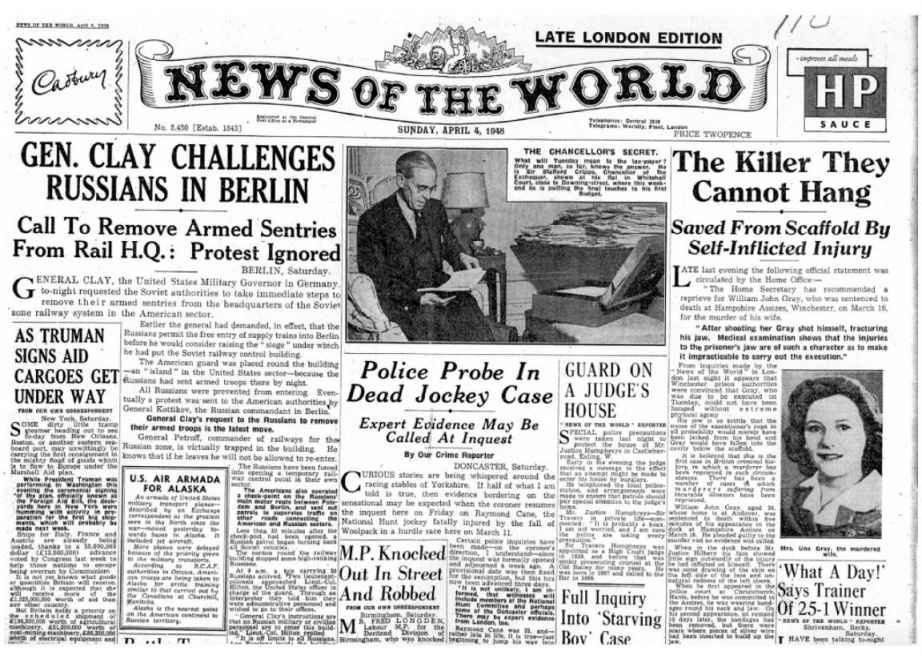

和许多日常用语（比如艺术、爱情和正义）一样，广告行为很难被准确界定。首先，广告行为不同于广告：广告行为是一个过程，而广告则是这一过程的终端产品，但这两个词经常被互换使用。其次（或许这一点更为重要），虽然公众使用“广告行为”一词来指代所有宣传活动，但在广告业内部，这个词只用于特指（尽管混用的情况依然存在）。
在本书中，我将使用行业内部的定义。在行业内部，广告行为只是众多市场营销手段的一种。通常没有被算作广告行为的其他营销手段包括：包装、促销（减价、买一送一、竞拍等）、商品目录、橱窗和店内宣传、影视节目中的品牌植入、商业电子邮件、服饰及其他产品上的品牌名、公共关系（媒体对品牌的提及）、商业网站和博客，以及电话销售。所有这些（以及许多其他手段）都属于市场营销手段，通常被用于增加商品销量。但在广告业内部，这些手段根据定义并不属于广告，也不算广告行为。
那么广告究竟是什么？尽管有点含糊，我们不妨对广告做如下界定：
让我们来看看这一定义中的关键词。
首先：“付费” 。严格说来，不付费的广告并不是广告。如果不涉及成本，那么虽然相关交流是很好的宣传活动，并且具有游说性质，但它并不能算作广告行为，除非这是一则有意以免费形式发放的广告（比如为了慈善事业或类似的活动）。
其次：“交流” 。每个广告都试图在发送者和接受者之间搭建桥梁。这种搭桥行为就是一种交流。购买报纸的一整版，但留空不作，这样的行为不是广告。不管是使用文字或图片，或是两者兼具，广告必须传递某种讯息给受众。
第三：“目的” 。我们随后（尤其是在第七章）将看到，并非所有的广告都“能够”达到预期目的。即使某则广告没有取得预期效果，这一事实并不会改变它作为广告的性质。意图才是最重要的。
第四：“提供信息，并且/或者游说” 。许多人，尤其是那些对广告行为持敌视态度的批评者，试图区分信息型广告和游说型广告。前者被认为可以接受并且符合需要，而后者被认为接受度较低，或者完全无法接受。事实上，根本无法划定信息和游说之间的界限。广告投放者放在广告中的所有信息都意图达到游说的目的（除非法律规定必须包括某些信息）。
但是由于广告行为的游说作用具有争议，因此更合适的说法还是所有广告都意图“提供信息，并且/或者游说” 。不过，一则不打算进行游说的广告很难算是广告。
最后：“一个或多个人” 。所有广告都以人为对象。有时广告只针对一个人（“棒棒糖：做我的情人，我也将永远做你的情人。肌肉男” ），有时广告针对无数人（“欧莱雅：因为你值得拥有” ）。当公众想到广告行为时，他们想到的几乎总是在大众媒体上进行宣传的大众广告行为，在本书中我们将重点关注此类广告。但是，小型的分类广告也是一个规模巨大的广告分支，尤其是在平面媒体和互联网上，因此不能忘记这类广告。在英国及其他许多国家，平面媒体超过40%的广告收入来自分类广告，不过现在在世界范围内，随着互联网抢走了传统媒体的许多客户，这一数字正在下降。
弄清上述定义非常重要，因为本书不会涉及许多被普遍认为是广告的行为。本书将重点放在大众消费者在大众媒体（如电视、报纸、杂志、海报、电台、电影和互联网）上投放的广告，即大多数人在大多数情况下认为是广告的那些行为。
另一个看起来很简单并且已经老掉牙的问题：很显然每个人都知道广告行为意图销售产品-那是它的目的所在，不是吗？但真的这么简单吗？那个“肌肉男” 的例子说明了什么？他试图向“棒棒糖” 兜售什么东西？当慈善组织通过广告来募集资金的时候，它们在兜售什么？当政府通过广告来敦促人们停止吸烟，或者停止酒后驾车，或者鼓励人们献血的时候，它们在兜售什么？当军队，或者英国的全国医疗服务体系，或者其他任何机构，通过广告来招募人员的时候，它们在兜售什么？在上述每个例子中，广告都试图“提供信息，并且/或者游说” 他人，所以它们都在我们的定义范围之内。但它们真的是在兜售 东西吗？
图1 他们在兜售什么？
这引向了广告行为的一个基本特征，许多人觉得这一特征难以把握。广告行为并不是一种同质实体。（这解释了为何难以对广告行为进行精确界定。）它涵盖了大量不同的交流方式，并且具有不同的目标。大多数广告的确以销售产品和服务为目的。但并非所有广告都是如此。即使那些以销售为目的的广告，它们达到目的的手段也是多种多样的。广告就像万花筒里的众多碎片。整体上，它们呈现出一个统一模式，但事实上，每个广告都可能与其他广告截然不同。
每个广告从业人员都已经习惯听到外行人提问：“究竟是什么造就了成功的广告宣传？有效广告行为的秘密是什么？”或者类似的问题。这类问题暗示，存在某种“金钥匙”，广告投放者可以借助这样的“金钥匙”来揭开成功广告的秘密。但事实上这样的“金钥匙”并不存在，并且“究竟是什么造就了成功的广告宣传？”这一问题并不是只有唯一的答案。（尽管这样发问的人总想提出他们自己的答案，这也是他们发问的首要原因。）
永远不可能有“金钥匙”，因为即使是那些想要销售产品的广告也是通过各种各样的方式来达到目的的，并且有着各种各样的直接目标。有十种常见的目标，不同的广告投放者在不同的时候为不同的产品和品牌选择不同的目标（我们将在第三章仔细区分“产品”与“品牌”）。下列目标并不全面，也不可能做到全面，因为广告投放者总在设立新的目标。广告宣传可能试图做到：
这些迥异的目标需要不同的讯息，因而需要采取各种不同的广告策略。
许多教材认为，在开展宣传攻势之前，精确并详尽界定广告宣传活动的目标至关重要。它们认为，试图向所有人销售所有产品，总会遭到失败。
的确，精确并详尽界定任何广告宣传的目标至关重要，但是一场宣传活动完全可以有多个目标，只要不同的目标相互兼容，并且不会彼此矛盾。事实上，近来的研究显示，大多数成功的广告宣传平均具有约2.5个相互重合的目标。例如，“在富裕的潜在客户群体中培养对于一个高档新品牌的品牌意识，他们只能从顶级零售商那里购买到该产品”。这个特定目标包括至少四个子目标：（1）在富裕的客户群体中；（2）培养品牌意识；（3）一个高档品牌；（4）只能从顶级零售商那里购买。所有这些目标对于达到该品牌的最终促销目的都至关重要。
每个广告宣传活动的目标都会在一份关键文件中详细列明，通常这样的文件被称为广告策略 。这是新的广告宣传活动的关键方案，我们将会在本书中时常回到这一方案。不同的广告投放者及他们的代理机构给这一做法起了不同的名字，但它的目的总是不变的：界定广告宣传活动的目标，并且确保广告宣传所涉及的每个人都确切知道这些目标是什么。这将确保他们（其中许多人是拿着高薪的创意人员）不会浪费时间构思无关的或者不符合要求的创意。
为达到这些目的，广告策略将包括许多条块，这些条块必须在广告宣传工作开始之前完成。它们将精确界定广告宣传活动的详细方案。它们将包括宣传活动的目标；能够确证目标可行性的品牌相关信息；品牌的竞争对手，包括他们的广告行为和市场营销活动的详细情况；所有相关市场调研情况的总结（比如，消费者为何使用该品牌，或者为何不使用）；宣传活动必须传递的讯息，以及讯息传递过程中必须使用的语气；宣传活动可能采用的媒体；可用于广告筹备和媒体宣传的预算；广告筹备和媒体宣传的时间长度；对宣传活动起到重要影响的其他细节；最后，尤其重要的是，宣传所针对的目标市场 。
许多重要的部分将在随后的各章中进行详细讨论。但鉴于其重要性，让我们从最后一项开始：目标市场 。
广告宣传活动的两个最重要因素分别是品牌自身（即广告所宣传的产品或服务）和潜在购买者（即目标市场）。你或许认为前者远比后者来得重要，毫无疑问，在过去的那些年里人们普遍持这一看法。但现在这两个因素被认为处于共生状态：品牌和它的目标市场紧密联系在一起。
为什么会这样？有三个因素。首先，每个领域中的产品和服务日益多样化，这意味着最大的、最流行的品牌也只被全部人口中的少数人所使用。即使是像乐购这样的大型连锁超市所拥有的客户人数通常也只占到英国总人口的约三分之一。因此，广告投放者需要找出他们所能找到的关于广告目标人群的一切信息。其次，市场调研的发展使广告投放者得以比过去更精确地了解它们的潜在客户。再次，现在的媒体受众是如此分化，为了选择能以最具成本实效的方式接触受众的媒体，确认具体的目标市场非常重要。
图2 即使是像乐购这样的大型连锁超市所拥有的客户人数通常也只占到英国总人口的约三分之一
过去，在诸如《世界新闻》之类的报纸上（1948年，《世界新闻》的销量达到创历史纪录的800万份/周），或者诸如独立电视台之类的电视频道上所投放的广告，其受众人数能够超过英国总人口的50%，但这样的日子早已过去。（如今，即使是像电视之类的大众媒体，不同的人群在每天的不同时段收看不同的频道和不同的节目：中午时间在繁忙的商务人士不可能收看的频道投放针对他们的广告，这样的广告行为毫无意义。）
这三个因素造成的结果是，产品和服务不再针对全部人口来设计和制定。它们针对特定的目标市场：明确界定的人群，无论大小。这是品牌和目标市场共生的基础。

图3 1948年，《世界新闻》的销量达到创历史纪录的800万份/周
为了分析和理解目标市场，所有的主要广告投放者现在都在进行根据特定需求专门设计的大规模市场调查。此外，还有大规模的联合调查可供利用，这些调查持续进行，任何人都可以通过合约方式获得调查数据。其中，最重要的数据是目标群体指数（TGI） 。目标群体指数于1969年在英国启动，现在已经发展成为一个全球性的调查，在坎塔尔市场调查公司（世界最大的市场调查公司之一WPP 集团的分支）的主持下在超过50个国家里进行。
目前，目标群体指数调查每年在这些国家进行超过70万次访谈，它涉及五百多个领域内的四千多个品牌。该调查会确认这些品牌使用者详尽的个人信息，包括年龄、阶级、性别、婚姻状况、工作状况、教育、居住情况、媒体消费以及社会活动。但目标群体指数提供的讯息不止这些。它分析每个品牌的使用频率：该品牌的消费者究竟是经常使用该品牌（“高频使用者”），还是不经常使用（“低频使用者”）？它分析消费者对250个问题的观点和态度，这些问题涵盖健康、假期、财政、环境和许多其他主题，将宝贵的心理和个性数据与品牌使用情况关联在一起。目标群体指数收集并提供所有此类数据，因为它知道这些是广告投放者、媒体和代理机构（它自己的目标市场）所需要的信息，以便能尽可能地了解他们的 目标市场。
目标群体指数提供的数据帮助广告投放者和它们的代理机构确认潜在的最有可能成为它们销售来源的消费者：目标市场。但它同时也揭示目标市场对于品牌的态度。消费者想从品牌那里得到什么？不想得到什么？这再次反映了品牌和目标市场的共生关系。品牌存在的目的就是要为它的目标市场提供对方所需要的产品和服务。因此，让我们来看看消费者想从品牌那里得到什么。
还有一个看似简单且愚蠢的问题，你已经感觉到了！人们当然希望他们所购买的产品能够有效地、可靠地兑现它们的承诺：正如消费者保护法所说，能“起到应有的效果”。
但这一期望没能完全实现。品牌和目标市场的共生关系还导致关注重点从产品的原料构成转向最终利益 。简单来说，人们不是因为需要钻机而买钻机；他们买钻机是因为他们需要洞眼。除非你是个冶金学家，否则当你购买钻机时，它的金属配件规格对你来说无关紧要。你并不在意它的金属配件规格，你只需要一些洞眼。令人震惊的是，政策制定者时常没能领会这一关键事实。让我们来看看宠物食品包装的例子。法律规定，宠物食品制造商必须在包装上注明食品具体的成分，虽然宠物的主人们只关心最终利益：他们的宠物能享受食物并保持健康。具体的成分说明对他们来说无足轻重。
因为人与人（以及宠物与宠物）不尽相同，不同人群对于相似产品所要求的最终利益也不尽相同。因此，不同的人群构成不同的目标市场。广告宣传活动需要推销各个目标市场所需的不同的最终利益。
广告投放者当然总是希望不同的人需要不同产品，并且人们因为它们所带来的利益而购买产品。但如果你翻看任何关于19世纪广告的书（比如，莱昂纳多·德弗里斯的杰作《维多利亚广告》），你会很快发现，在那些日子里几乎所有的广告都将重点放在产品本身以及如何使用该产品上。如今，大多数广告宣传都聚焦于最终利益。产品成分和构成仅仅被用来支持产品所提供的最终利益，并使其合理化。
消费者从产品中想得到的利益不仅仅是信息和功能，这一点在一个富裕社会中尤其明显。在功能之外，消费者还想要并期待从所购买的产品那里得到心理的和情绪的最终利益。是的，他们想要产品正常运行，能“起到应有的效果”，这一点无须赘言。但他们同样想要所购产品以各种方式让他们感觉良好。用广告业的术语来说，他们希望品牌形象 适合他们。品牌形象 是品牌所激发的感觉和情绪所带来的光环。消费者希望所购品牌的形象能让他们更有魅力，更为年轻，更加聪明，或更加广博。他们想要所购品牌的形象让他们更富男子气概，更具女性魅力，更加健康，或让他们成为更明智的消费者，更好的父母亲，或更彰显出他们的环保意识。这些品牌形象所带来的利益对于他们的购买选择至关重要。
因此，广告宣传活动必须将这些情感利益考虑在内。我要再次强调的是，不同的目标市场有着不同的情感利益。广告策略将界定目标市场的情感需求。如今，在许多产品领域，品牌及其广告行为在满足客户的功能需求之外，还必须迎合客户的心理和情感需要。有明确的研究证据表明，“以情动人”的广告总体而言比直白的事实型广告更为有效。与钻机的例子不同，在那些品牌形象对于客户至关重要的市场，这一点尤其明显。这样的市场包括汽车、航空、酒类产品、服饰、化妆品以及碳酸饮料的市场。
与现代广告行为的研究者所认为的正好相反，这些都不是新兴产物。很显然，有史以来人们就对他们拥有并展示的产品和服饰的形象（所谓的“情感态度”）十分了解。但是，这并不等于说，我们可以抛开产品本身，制作纯粹的情感型广告。品牌的形象必须与它的功能利益相一致，反之亦然；这一点至关重要。对广告极度不满的批评者认为，巧妙的广告宣传活动能够左右公众的思维，让他们按照广告投放者的预期形成对于产品的看法。但事实并非如此。不管广告宣传多么巧妙，广告行为不可能让消费者将口感清爽的啤酒认作是重口味的，或者将甜的葡萄酒认作是没有甜味的，或者认为一个钝的钻机能钻出好的洞眼。巧妙的广告行为可以游说消费者购买该产品一次（但这样做其实很愚蠢），但他们很快就会发现他们上当受骗了。品牌所提供的功能和形象利益（这是广告行为所必须传递的讯息）必须像七巧板的部件一样紧密联结在一起。如果各个部件没有紧密吻合，消费者就会发现该品牌存有疑问，因此无法接受，并最终导致品牌的失败。这就好比一个领袖先是将自己吹嘘成一个伟大的皇帝，随后却无法赢得战斗。
最后，在这部分必须牢牢记住广告投放者和广告行为的多样性，之前我已经强调过这一点。简单起见，上述内容大半与广告行为的产品有关：涉及商品，而不是服务。但在大多数富裕国家，服务如今已经占到国民生产总值的绝大部分。事实上，服务业的价值如今常常超过生产业。例如，英国的服务业占到经济总量的约三分之二：零售、娱乐、金融服务、旅行和旅游都是重要的行业部门，同时也是主要的广告投放者（参见第33页的表格）。在上述段落中关于商品的一切讨论也适用于服务产品。界定服务产品的目标市场（目标群体指数除了商品之外，也覆盖所有的主要服务行业），界定服务产品的最终利益，将资讯利益和情感利益结合起来，传递理想的品牌形象-这些操作同样重要。品牌与目标市场的共生关系对于所有类型的现代广告行为来说都极其重要，不管所宣传的产品是什么。
简短而真实的回答是：费九牛二虎之力。
约翰·霍布森是20世纪英国最具思想、最有分析能力的广告从业人员之一。他于1955年创立了这个时代最成功的广告代理机构之一。霍布森说道：
自1955年之后的数十年里，人们尝试了无数种广告宣传手段，其中一些很成功，而另一些则有所欠缺。与此同时，广告投放者已经进行了无数次市场调研。这一切都意味着，如果所有的相关信息都经过仔细研究和分析的话，可以预先排除一部分所谓的“适用于任何工作的数十种方法”。如今，研究和分析这些信息的责任由那些被称为广告企划人员 的人来承担。
广告企划现在已经在全球范围内实行，不过这一做法直到1970年左右才出现，当时伦敦的两家广告代理机构几乎同时发展出这一设想。这两家机构是智威汤逊公司伦敦分部（美国广告业巨头智威汤逊公司在英国的分支，现在归WPP 集团所有）和当时刚起步的英国代理机构博厄斯·马西米·波利特公司（创立于1968年5月）。“广告企划”这一术语出自智威汤逊公司伦敦分部，两家公司所发展的这一体系略有不同。其他代理机构随后对这一体系各自进行了细微修改，但体系的基本组成具有普遍性。
广告企划体系要求广告代理机构为每一家客户指派一名广告企划人员（对客户进行分析的调查员）。广告企划人员不同于过去的广告代理机构里那种秘密的研究人员，他们会在各项会议上代表该机构与客户进行坦率的交流。广告企划人员分析与品牌相关的所有数据，包括销售趋势、以往的研究、以往宣传活动的结果、竞争对手的活动、客户的态度等，包括了上文提及的与广告策略方案有关的所有信息。在分析所有数据之后，广告企划人员要负责构思并起草详细的广告策略：广告的目的和对象是什么？怎样实现？所有这一切先要经过同事们的同意，然后再得到客户的首肯。
现在有了充足的数据，要将这些数据转化为有效的广告策略并不简单。广告企划人员需要具备高超的电脑使用技巧，并具备相应的技术、经验和洞察力，对大量调研信息进行分析，从这些信息中得出几个关键性的结论，并推断出广告宣传活动必须传递的讯息和广告的目标市场。简单并且老掉牙的结论和目标毫无用处。如果广告企划人员的结论只是该品牌比竞争对手更好，因此广告宣传要说服公众相信这一事实，那么由此所完成的广告宣传很可能变得空洞无物。企划人员必须具备更为敏锐的观察力，并且对信息进行更为深入的发掘。该品牌在功能和情感方面的优点和缺点是什么？在哪些方面该品牌比它的竞争对手更好（或更差）？怎样才能以有说服力的方式将这些讯息传递给受众？哪个或哪些目标市场必须被说服？应该陈述哪些理由（包括理性和情感两个方面）来游说对方？优秀的广告企划人员在数据基础上建立起详尽的架构，让广告策略在那些实施人员眼中变得鼓舞人心、令人兴奋。（毫不奇怪，最优秀的广告企划人员如今都拿着高薪，其中女性占了很大比重。）只有在这一步完成后，代理机构的创意团队和媒体专家才开始他们的工作，准备实施广告宣传。
广告企划人员的下一个任务更为艰巨。一旦广告策略的草案被接受并实施，广告企划人员要负责确保宣传活动的结果达到策略所规定的目标。但是，现在讨论这一过程为时尚早：我们将在第七章来探讨它究竟如何操作。
首先，我们现在必须对广告行为的历史进行一些基本调查，来说明这一行为如何以及为何发展成如今的方式。这是一个复杂而又罕见的产业，分成多个部分。要想理解广告行为如何运作，就必须明白这一产业为什么如此四分五裂，并界定各个部分的功用。